| 상품 | 군마트 | 쿠팡 | 차이 | |
|---|---|---|---|---|
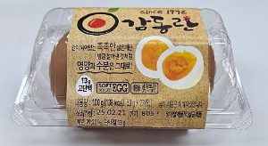 | 감동란 100g | 1,280원 | 3,688원 | -65% |
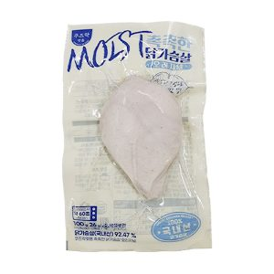 | 와이앤비푸드농업 쿠즈락앳홈 촉촉한 닭가슴살 오리지널 100g | 2,040원 | 3,840원 | -47% |
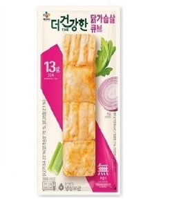 | 씨제이제일제당 The 더건강한 닭가슴살 큐브 80g | 870원 | 1,490원 | -42% |
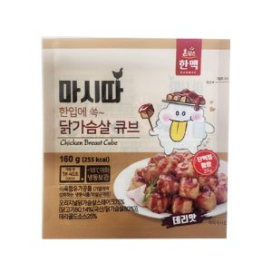 | 한맥푸드 마시따닭가슴살큐브데리맛 160g | 2,030원 | 3,182원 | -36% |
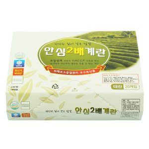 | 원삼양계 안심2배계란 1040g | 5,970원 | 8,990원 | -34% |
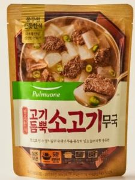 | 풀무원식품 반듯한식 고기듬뿍 소고기무국 460g | 3,370원 | 4,950원 | -32% |
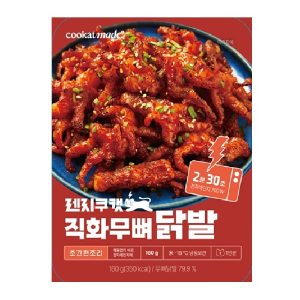 | 쿠캣 직화무뼈닭발 160g | 7,090원 | 10,100원 | -30% |
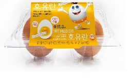 | 호유란 100g | 1,160원 | 1,590원 | -27% |
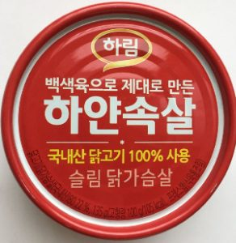 | 하림 하얀속살슬림닭가슴살 135g | 1,920원 | 2,625원 | -27% |
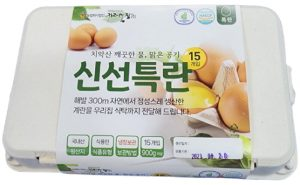 | 귀래농장 신선특란15구 900g이상 | 5,060원 | 6,540원 | -23% |
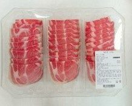 | 동원홈푸드 경기1공장 돈목살 700g | 12,170원 | 15,353원 | -21% |
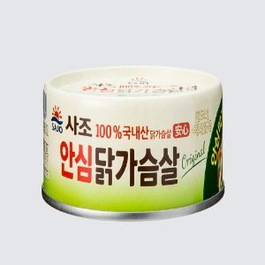 | 사조대림 안심닭가슴살 135g | 1,770원 | 2,132원 | -17% |
| 푸드나무 랭킹수산 렌지에 구워먹는 고등어구이 70g | 3,020원 | 3,638원 | -17% | |
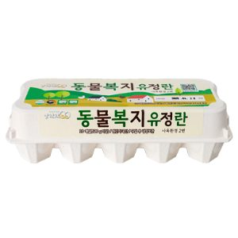 | 원천오복 알참참 동물복지유정란 10구 520g | 4,470원 | 5,335원 | -16% |
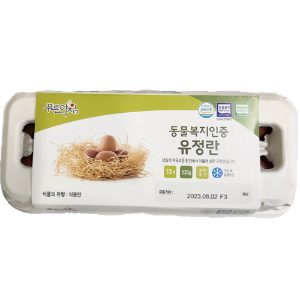 | 푸른아침 동물복지인증 유정란 10구 | 4,300원 | 5,100원 | -16% |
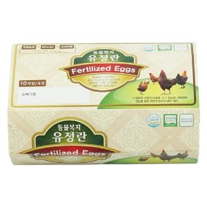 | 동물복지 유정란 10구 520g | 4,750원 | 5,280원 | -10% |
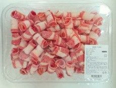 | 동원홈푸드 경기1공장 우삼겹 600g | 13,490원 | 14,900원 | -10% |
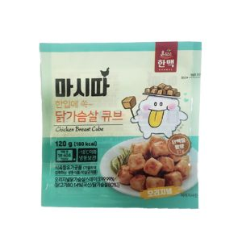 | 한맥푸드 마시따닭가슴살큐브오리지널 120g | 2,030원 | 2,225원 | -9% |
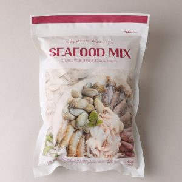 | 은하수산 씨푸드믹스 600g | 12,940원 | 13,930원 | -7% |
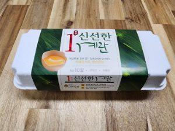 | 귀래농장 신선한계란10구 특란10구 600g이상 | 4,050원 | 4,350원 | -7% |
정육·수산 말고 다른 것도
더 이상 직접 비교하지 마세요.
군마트 상품을 한곳에 모아 PX 가격과 온라인 가격을 쉽게 비교할 수 있습니다.
이게 실제 화면이에요. 상품을 누르면 바로 열립니다.
국방가족 분들이 조금이라도 편하게 군마트를 이용하셨으면 하는 마음으로 만들었습니다.
국방가족을 위한 작은 재능기부입니다.
원하는 상품을 검색해보세요!